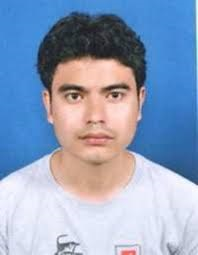

Academic Profile
Assistant Librarian, Department of Library, Presidency University, Kolkata (3rd Campus, Dowhill, Kurseong, West Bengal).
PhD (Calcutta University, 2023).
Academic Qualifications
Doctor of Philosophy
Calcutta University
Duration: 2023
Calcutta University
Duration: 2023
Master of Library and Information Science (MLIS)
North Bengal University
Duration: 2013
North Bengal University
Duration: 2013
Bachelor of Library and Information Science (BLIS)
DS College, Sikkim University
Duration: 2011
DS College, Sikkim University
Duration: 2011
Bachelor of Science (BSc)
St. Joseph's College, North Bengal University
Duration: 2008
St. Joseph's College, North Bengal University
Duration: 2008
UGC NET-JRF
2013
2013
Publications: Academic
Book Chapters
2015: Tamang, P. Development of skills of LIS professionals through trainings and workshops: An Indian context. In P. Mondal & S. Chakraborty (Eds.), LIS Career at the Cross Roads: Challenges and Opportunities (pp. 305–327). Department of Library and Information Science, University of Calcutta.
Conference Proceedings
2014: Tamang, P. & Maitra, P. B. Organic farming of mineral spring area of Darjeeling district of West Bengal: An indigenous knowledge practice. In Roadmap to usher in knowledge society: Proceedings of the 26th IASLIC National Seminar (pp. 107–111). Indian Association of Special Libraries and Information Centres (IASLIC).
Journals
2023: Tamang, P. Guidelines on information services to organic farmers of Darjeeling district of West Bengal: A model. RBU Journal of Library & Information Science, 25
2024: Tamang, P., & Maitra, P. B. Mapping the Routes of Open Access: A Bibliometric Analysis of Indian Contributions to Organic Agriculture (2019–2024). LIS Links Newsletter, 10(1), 47-56. http://newsletter.lislinks.com
Contact
Official Email ID: prayash.lib@presiuniv.ac.in
Contact no.: 9593291870
Address: Department of Library, Presidency University, Kolkata (3rd Campus, Dowhill, Kurseong, West Bengal).
Google Scholar: https://scholar.google.com/citations?user=rtizUUsAAAAJ&hl=en&oi=ao